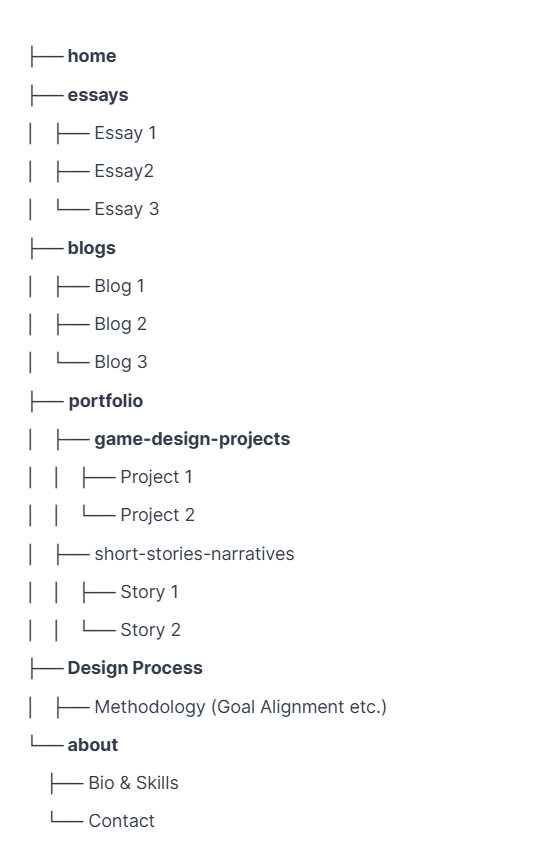

Interaction Design
Blog published by
"Interaction: It's the meeting point between an active body and something that it can affect in some way"
Bardin, R. (2023)
User Alignment
My Goals with this website is to:
- showcase my technical and creative work, that being my writing, and game design/development etc.
- I also want to establish my professional and creative identity as well as make my work accessible and organized based on what category it is in.
Users
Potential Users for my website include:
- Potential Employers and/or clients looking for proper understanding of my skills.
- Peers who are interested in my written work and those interested in game development.
These various users would visit the website to:
- explore the projects found in my portfolio
- to evaluate my quality of work and style.
- If anyone is interested in my design process; they would also have access to that detail.
Content Mapping:
Since my website will have a navigation bar that will take users to different pages; which will have their respective content; my content map will include:
- Essays - researched pieces both formal, for academic assignments and informal.
- Blogs - opinion based, and some discussing my design process.
- Portfolio - will consists of Game design projects; Short stories & Narratives etc.
- Design Process- documenting the design process for my website; which various iterations and details of wireframes.
- About - contact information and brief professional biography.
User Experience Mapping:
Basic user flow of website:
- User lands on homepage
- They can navigate to any page/section through the navigation bar; including Essays, Blogs, Portfolio, Design Process and/or About page.
- If they choose Blogs page; they will find various several links to their respective blogs.
Interface Elements:
- Navigation components including Main Navigation bar and tags for blogs & essays.
- Information components including project cards for blogs, essays etc. and preview snippets
- Modal windows/Notification pop ups
Input Controls:
- I would like to add the Portfolio page to have a filter/dropdown button
Info Components:
- Blogs; Essays and Portfolio page will have project cards with thumbnails
- Maybe preview snippets for projects
- Modal windows to show project detail, like when you hover over a project card it would show more detail.
Connection Structure & URL Scheme:
/(Home Page)/essays/(Essays landing page)/essays/topic-name/essay-title(Individual essay)/blogs/(Blogs landing Page)/blogs/category-name/post-title(Individual blog post)/portfolio/(which is the entire portfolio landing page; showing all Portfolio projects)/portfolio/game-design/project1(Game design project)/portfolio/short-stories-narratives/story-name(Short story)/design-process/(Design process page)/about/(About page)
The URL scheme I'm using:
illustrates the content categories' sequential relationship. makes the site's organization easy to understand and/or intuitive. It helps with SEO by semantically and logically structuring material.
Semantic Markup:
It is the process of showing the meaning of content on a web page using HTML tags. It helps in the comprehension of a web page's structure by users, search engines, and assistive technology.
For the semantic markup...
Development Progress Reflection:
My current implementation aligns with the structure of the website that I have planned on exploring. It does not exactly align with it though. Since I have drafted my wireframes; the navigation bar clearly communicates the structure of the website. The basic HTML can be found on my page but I have not implemented any of the functionality.